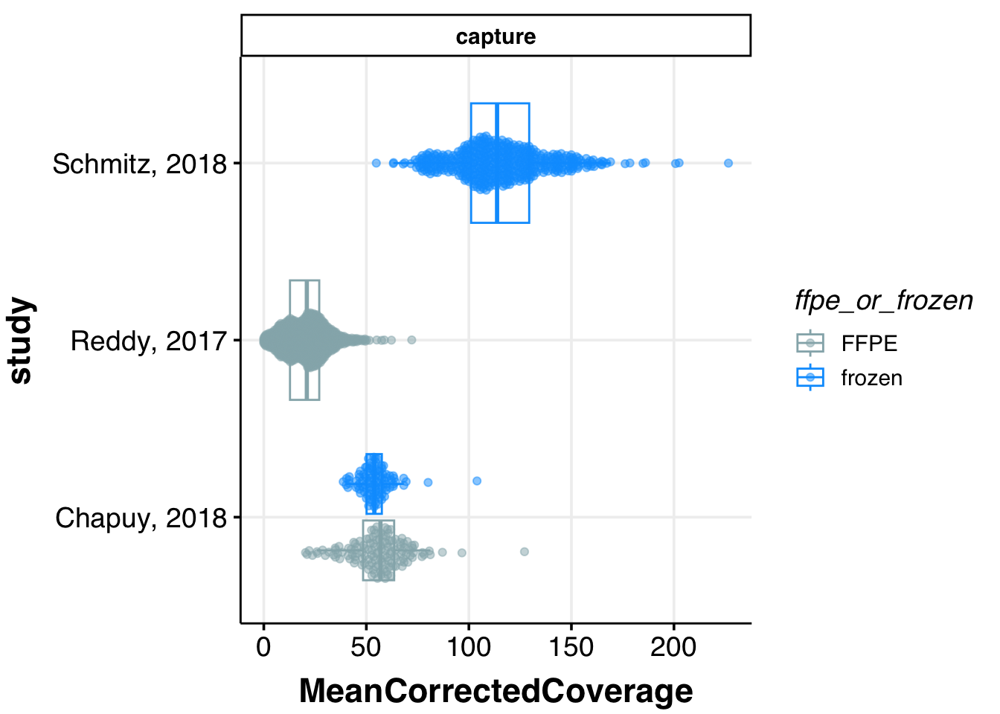
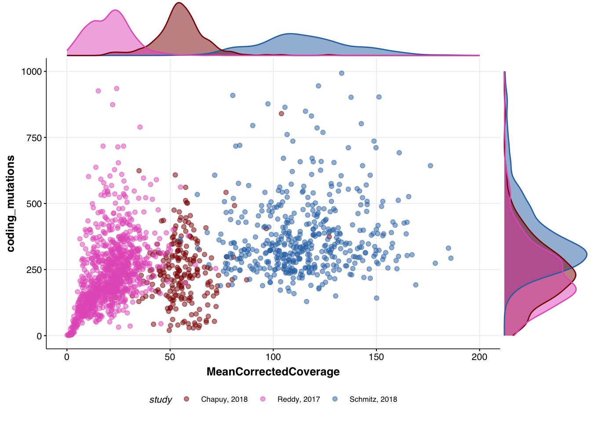
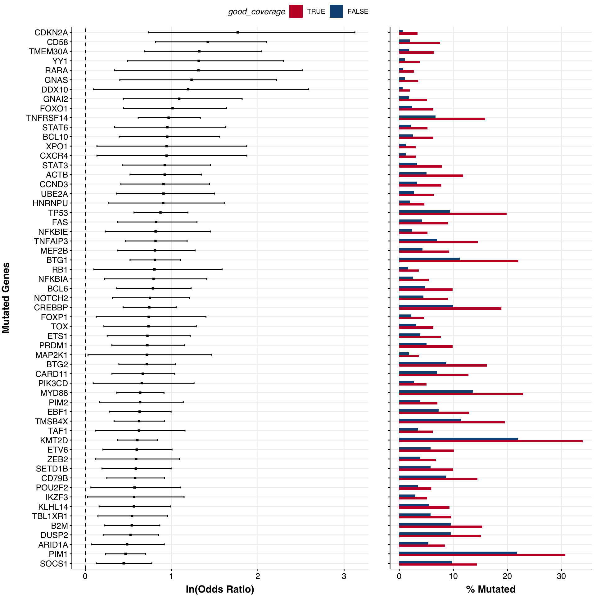
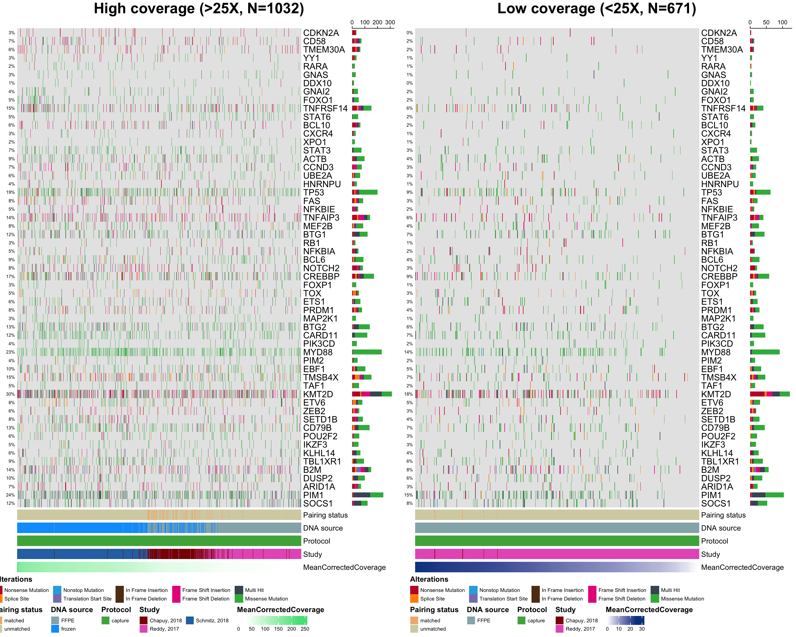

Exploring data quality
When comparing the mutation data from different sources, it is important to consider different underlying biases that may lead to unexpected results or incorrect conclusions. Different centers and groups may have different acceptable standards to library preparation, sequencing, data quality control, variant calling and analysis. More discussion on this can be found in the Dreval et al Blood spotlight published in 2022.
Can we use GAMBLR.viz to conduct similar investigation and take advantage of the bundled data and the visualizations available with this package?
This tutorial will demonstate the example of the inputs and showcase the main features of such analysis, replicating some panels and figures from that study.
Prepare setup
We will first import the necessary packages:
Next, we will get some data to display. We have explored before how to obrain data bundled with GAMBLR.data and the difference between the available objects, so here we will use the demonstrated approaches to retreive metadata and simple somatic mutations. For demonstration purposes, we will focus on the largest whole exome sequencing studies.
# Get metadata
metadata <- gambl_metadata %>%
filter(
cohort %in% c("dlbcl_chapuy", "dlbcl_reddy", "dlbcl_schmitz")
)
# Get mutations
maf <- get_coding_ssm(
these_samples_metadata = metadata,
this_seq_type = "capture"
)Next, we can take advantage of the collate_results() function in GAMBLR.data to add all the necessary QC metrics that were directly reported in the MIRAGE manuscript.
metadata <- collate_results(
sample_table = metadata
) %>%
left_join(metadata, ., by = "sample_id")Now we have our metadata and mutations we want to explore, so we are ready to start exploring and visualizing the data.
Target space coverage across the studies
The original manuscript highlights a striking difference in the effective nonredundant coverage across the target space (MeanCorrectedCoverage). Let’s see how that plot was generated:
metadata %>%
ggplot(
aes(
x = study,
y = MeanCorrectedCoverage,
colour = ffpe_or_frozen
)
) +
geom_boxplot(outlier.shape = NA) +
geom_quasirandom(
dodge.width = 0.8,
alpha = 0.5
) +
coord_flip() +
facet_wrap(
~seq_type,
ncol = 1,
scales = "free"
) +
scale_colour_manual(values = get_gambl_colours()) +
theme_Morons(
my_legend_position = "right",
my_legend_direction = "vertical"
)
Indeed, the coverage in one of the studies is very different from the rest. This plot, also shown on panel B of Figure 1 in the manuscript, also shows that there are only 5/999 samples in the study by Reddy et al that have coverage figher the sample with the lowest coverage in the study from Schmitz et al! Seeing this, the logical question arises: does this difference in the sample quality affects the ability to detect coding mutations in lymphoma genes?
Correlation between coverage and mutation discovery
Next, we can see whether there is any limitation to detect somatic mutations in the relevant genes when the sample is of a very poor quality. Indeed, the plot below replicates the panel C of Figure 1 in the manuscript and shows that there is direct effect:
# reformat naming of the standard colors
cols <- get_gambl_colours()[c("Schmitz", "Chapuy", "Reddy")]
names(cols) <- c("Schmitz, 2018", "Chapuy, 2018", "Reddy, 2017")
# plot
p <- metadata %>%
ggplot(
aes(
x = MeanCorrectedCoverage,
y = coding_mutations,
colour = study
)
) +
geom_point(alpha = 0.5) +
scale_color_manual(values = cols) +
ylim(c(0, 1000)) +
xlim(c(0, 200)) +
theme_Morons(
base_size = 8,
my_legend_position = "bottom",
my_legend_direction = "horizontal"
)
# display density
ggMarginal(
p,
type = "density",
groupColour = TRUE,
groupFill = TRUE
)
Find significant differences between low and high coverage groups
Next, we can explore whether or not there are any significant differences in the frequency of mutations as detected in those of high and low coverage. As a cutoff, we arbitrarily selected a value of 25X for the sample to be considered in of the “High” or “Low” groups. We will here reformat the metadata to a more convenient format:
mirage_meta <- metadata %>%
mutate(
good_coverage = ifelse(MeanCorrectedCoverage > 25 , "TRUE", "FALSE")
) %>%
as.data.frame %>%
mutate(
sample_id = Tumor_Sample_Barcode,
`DNA source` = ifelse(
ffpe_or_frozen == "ffpe",
toupper(ffpe_or_frozen),
ffpe_or_frozen
),
Pathology = pathology,
Study = study,
`Pairing status` = pairing_status,
Protocol = seq_type
)For the demonstation purposes, let’s focus only on a set of genes reported as significantly mutated in the Reddy et al study. To find out these genes, we do not need search Pubmed for the gene lists, but can convently retreive from one of the GAMBLR.data objects:
genes <- GAMBLR.data::reddy_genes %>%
pull(hgnc_symbol)We now can take a look at what genes are significantly different between high and low coverage groups:
forest <- prettyForestPlot(
maf = maf,
genes = genes,
metadata = mirage_meta,
comparison_column = "good_coverage",
max_q = 0.1
)
forest$arranged
That’s a lot of difference! We can easily display this information in the form of oncoplot:
# display genes in the order of decreasing difference
gene_order <- forest$fisher %>%
arrange(desc(estimate)) %>%
pull(gene)
prettyCoOncoplot(
metadata = mirage_meta,
maf = maf,
comparison_column = "good_coverage",
label1 = paste0(
"High coverage (>25X, N=",
nrow(mirage_meta %>% filter(good_coverage == "TRUE")),
")"
),
label2 = paste0(
"Low coverage (<25X, N=",
nrow(mirage_meta %>% filter(good_coverage == "FALSE")),
")"
),
metadataColumns = c(
"Pairing status",
"DNA source",
"Protocol",
"Study",
"MeanCorrectedCoverage"
),
numericMetadataColumns = "MeanCorrectedCoverage",
sortByColumns = "MeanCorrectedCoverage",
metadataBarHeight = 5,
metadataBarFontsize = 10,
fontSizeGene = 12,
legendFontSize = 7,
genes = gene_order,
keepGeneOrder = TRUE,
arrange_descending = TRUE,
legend_row = 2,
annotation_row = 2
)